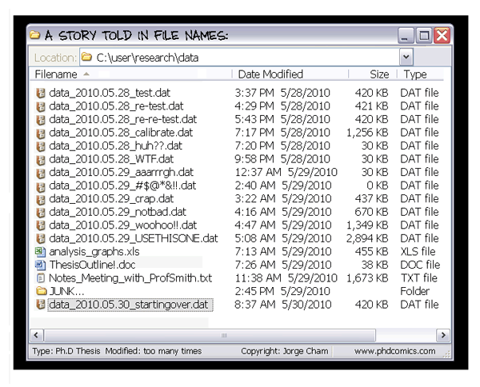
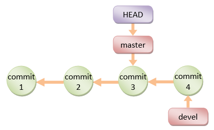
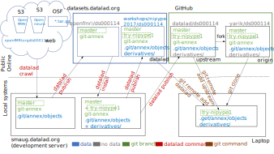

name: inverse layout: true class: center, middle, inverse --- # Using version control for code and data ### yoh@dartmouth.edu #### License: CC0 --- layout: false .left-column[ ## Outline ] .right-column[ ### Learning objectives ### Requirements ### Introduction - [git](https://git-scm.com) - [git-annex](http://git-annex.branchable.com) - [datalad](http://datalad.org) ### Hands-on ### Review questions ] --- .left-column[ ## Learning objectives ] .right-column[ - Warm-up with a typical git/github workflow - How git "works" - what is inside `.git/` black box - How git-annex and DataLad build atop git - How to obtain, manage, and share code and data using VCS ] --- .left-column[ ## Learning objectives ## Requirements ] .right-column[ - Git basics - GitHub basics - need to have a [github.com](http://github.com) account ] --- .left-column[ ## Introduction ] .right-column[ - Why to use version control systems (VCS)? - because we do it already but it hurts  - because it makes it easy to collaborate - because it is a great 'backup' - ... <**Q**: name your reasons> ... - from future "repeatable-research" (still applies) - to document/disseminate what was done - to repeat an analysis - to compare across analyses - to understand sources of variance ] --- .left-column[ ## Introduction ## Git Ecosystem ] .right-column[ - **[`git`](https://git-scm.com)** (tool) Git is a fast, scalable, distributed revision control system with an unusually rich command set that provides both high-level operations and full access to internals [`man git`] the stupid content tracker [`man git`] **why?** because Linus needed a FOSS VCS to develop Linux kernel - **[`github.com`](https://github.com)** (hosting website) GitHub is a web-based Git or version control repository and Internet hosting service. It offers [..] access control and several collaboration features such as bug tracking, feature requests, task management, and wikis for every project [[wikipedia](https://en.wikipedia.org/wiki/GitHub)] **why?** because **git** is great, but there were no public hosting ] --- .left-column[ ## Introduction ## Git ecosystem ] .right-column[ - **[`git-annex`](http://git-annex.branchable.com)** (tool) git-annex allows managing files with git, without checking the file contents into git [`man git-annex`] git-annex is a distributed file synchronization system written in Haskell. It aims to solve the problem of sharing and synchronizing collections of large files independent from a commercial service or even a central server [[wikipedia](https://en.wikipedia.org/wiki/Git-annex)] **why?** because **git** is great to version text but sucks for data - **[`datalad`](http://datalad.org)** (tool, distribution) DataLad provides a unified data distribution with the convenience of git-annex repositories as a backend. DataLad [..] allow to manipulate (obtain, create, update, publish, etc.) datasets and their collections. [`man datalad`] **why?** because **git** and **git-annex** are great and we have lots of data already -- we needed a _unified distribution_ to index and access it all ] --- .left-column[ ## Introduction ## Git ecosystem ## Quirks ] .right-column[ - **git** has a powerful and very flexible configuration system. Consider tuning up your `~/.gitconfig` (later) - There is a number of great and eye-candy GUI tools for **git**, but through out this tutorial we will use command line and may be ugly looking but powerful [gitk](https://git-scm.com/docs/gitk) for GUI navigation of the history (because it is a "standard" one) - On OS X `gitk` comes with `git` package e.g. via [brew](https://brew.sh/) - **git** does not care about (empty) directories, since it care about content and empty directory comes with no content - Some operations of **git-annex** (e.g. `metadata`) do not care about "pure-git" files - While using **git-annex** on Windows beware of the 260 characters filename length (was addressed on some Windows 10 release) - DataLad does not "officially" support Windows at all at the moment ] --- .left-column[ ## Introduction ## Git ecosystem ## Quirks ## Other "friends" ] .right-column[ - ** [etckeeper](http://etckeeper.branchable.com/) ** - ** [Travis CI](http://www.travis-ci.org/) ** - ** [CodeCov](https://codecov.io/) ** ] --- .left-column[ ## Introduction ## Git ecosystem ## Quirks ## Other "friends" ## Hands-on ] .right-column[ 1. `git` and `github.com` 2. `git-annex` 3. `DataLad` ] --- class: middle ## Let's get started ```bash docker run -it -u jovyan --name version-control \ nipype/workshops:latest-base /bin/bash ``` --- ## **git**: Warm up round We will work with the https://github.com/datalad/ds000114 repository. Rudimentary "contribute on GitHub" workflow .left-column2[ 1. "Fork" it on github.com into your account 2. Clone your fork to your local environment (it will become an 'origin') 3. Add the _official_ original repository as "upstream" remote - Q: how to make 'upstream' "read-only"? 4. Commit some changes 5. Push and submit a PR ] .right-column2[ ** Video tutorial (Opens in a new window) ** <a href="https://asciinema.org/a/evuh6s5qpqu2f7z2arusi5u2g" target="\_blank"><img src="https://asciinema.org/a/evuh6s5qpqu2f7z2arusi5u2g.png" width="100%"/></a> ] --- ## **git**: Workflow questions **Q:** did you create a new (feature) branch to submit your PR? -- **Q:** why generally you should submit PRs off a new (feature) branch? -- **Q:** how to update your PR with more changes now? --- ## **git**: what is in the black box of `.git/` `.git/` directory contains all information git needs to do its magic Let's investigate what is inside: ```bash $ ls --group-directories-first -F .git/ branches/ hooks/ info/ logs/ objects/ refs/ config* description HEAD index packed-refs ``` Use your favorite command line tool(s) (e.g. cd, less, vim, cat) to investigate content of `objects/`, `refs/`, `HEAD` and `config`. --- ## **git**: What is in the black box of `.git/` .left-column2[ **Qs:** what git contains ... - under `objects/`? - under `refs/`? - in `HEAD`? ] .right-column2[  [Git HowTo@ntu.edu.sg](https://www3.ntu.edu.sg/home/ehchua/programming/howto/Git_HowTo.html) ] --- ## **git**: Principles recap **git** maintains all content under `.git/objects`, and references 'commits' containing trees of files using 'branches', and 'tags'. `git add` of any file "embeds" it into `.git/objects` and copies to other remotes during push/pull operations. `git push`, `git fetch` send objects between remotes, and update references (`heads` AKA `branches`, and `tags`). ### Additional resources: - [Software Carpentry: Git](http://swcarpentry.github.io/git-novice/) Detailed walk through Git functionality - [The curious coder’s guide to git](https://matthew-brett.github.io/curious-git/index.html) Includes "A curious tale" bottom introduction to Git basic concepts - [How to get started with GIT and work with GIT Remote Repo](https://www3.ntu.edu.sg/home/ehchua/programming/howto/Git_HowTo.html) A nice single page visual guide through many Git commands/workflows --- ## Let's discover the unknown Look at files under `sub-01/` sub-directory, e.g. ```shell $ ls -l sub-01/anat/ total 4 lrwxrwxrwx 1 jovyan users 140 Mar 25 03:41 sub-01_T1w.nii.gz -> ../../.git/annex/objects/QP/jm/MD5E-s8677710--d6820f6cb8fb965e864419c14f6a22d5.nii.gz/MD5E-s8677710--d6820f6cb8fb965e864419c14f6a22d5.nii.gz ``` Check the size (`du` command) of the `sub-*` and other directories in the tree, of `.git/objects`. --- ## Let's discover the unknown -- **git-annex** This repository is not just a regular **git** repository. It is a **git-annex** repository. **git-annex** maintains large files content outside of `.git/objects` -- under `.git/annex/objects` _key store_ -- and replaces actual files with symbolic links pointing to those keys, which it then commits to git (symlinks do not occupy much of `.git/objects` storage). In addition, **git-annex** maintains `git-annex` branch within this repository (which is not intended to be checked out and manipulated directly), where it records information about locations of the data files (other clones, "special annex remotes", web urls). --- ## **git-annex** in action In case you want to retrieve any particular (or multiple, or all at once), use `git annex get` command: ```shell $> git annex get sub-01/anat/sub-01_T1w.nii.gz (merging origin/git-annex into git-annex...) (recording state in git...) get sub-01/anat/sub-01_T1w.nii.gz curl: (22) The requested URL returned error: 404 Not Found Failed to get annex.uuid configuration of repository origin (from web...) /tmp/ds000114/.git/annex/tmp/MD5E-s867 100%[============================================================================>] 8.28M 4.46MB/s in 1.9s 2017-03-25 01:17:33 URL:http://openneuro.s3.amazonaws.com/ds000114/ds000114_R2.0.0/uncompressed/sub-01/ses-test/anat/sub-01_ses-test_T1w.nii.gz?versionId=null [8677710/8677710] -> "/tmp/ds000114/.git/annex/tmp/MD5E-s8677710--d6820f6cb8fb965e864419c14f6a22d5.nii.gz" [1] (checksum...) ok (recording state in git...) ``` --- ## **git-annex**: But what has just happened? ```shell (merging origin/git-annex into git-annex...) (recording state in git...) ``` Upon first invocation of git-annex command it should initialize local `git annex`. See what has changed to the list of files under `.git/`, content of `.git/config` and list of your local branches. ```shell get sub-01/anat/sub-01_T1w.nii.gz curl: (22) The requested URL returned error: 404 Not Found ``` annex tried first to obtain that file from the `origin` remote, which is on github. Github does not "support" git-annex, in that it does not allow it to upload binary to somewhere under `.git/annex/objects` on github. That is why that initial download attempt has failed --- ## **git-annex**: But what has just happened? (continued) ```shell Failed to get annex.uuid configuration of repository origin ``` As you might have discovered from looking at `.git/config` changes, your local repository now has a unique UUID associated with it. **git-annex** assigns a unique UUID to every clone of repository, so it could track which clones carry which files/keys. Once again, github does not support storing annexed files, it doesn't support assignment of some UUID to its repositories either, and that is what git-annex here discovers and records -- in your `.git/config` now you have `annex-ignore = true` for the remote origin. ```shell (from web...) /tmp/ds000114/.git/annex/tmp/MD5E-s867 100%[============================================================================>] 8.28M 4.46MB/s in 1.9s 2017-03-25 01:17:33 URL:http://openneuro.s3.amazonaws.com/ds000114/ds000114_R2.0.0/uncompressed/sub-01/ses-test/anat/sub-01_ses-test_T1w.nii.gz?versionId=null [8677710/8677710] -> "/tmp/ds000114/.git/annex/tmp/MD5E-s8677710--d6820f6cb8fb965e864419c14f6a22d5.nii.gz" [1] (checksum...) ok (recording state in git...) ``` Finally **git-annex** found the file available in `web` special remote, downloaded the file, and recorded that change in git (within `git-annex` branch). --- ## **git-annex**: `whereis` command shows what **git-annex** knows about locations of the file we just got: ```shell ds000114$ git annex whereis sub-01/anat/sub-01_T1w.nii.gz whereis sub-01/anat/sub-01_T1w.nii.gz (6 copies) 00000000-0000-0000-0000-000000000001 -- web 03030b7b-99e3-409b-a7ac-bdf8b7bb2ef4 -- yoh@smaug:/mnt/btrfs/datasets/datalad/crawl-misc/nipype-workshop-2017/ds000114 135caf6c-5166-45e8-8d46-4ff5e08985b3 -- datalad 30a3fc48-d8bf-4c77-9b0b-975a9008b2bb -- yoh@smaug:/mnt/btrfs/datasets/datalad/crawl/openfmri/ds000114 342feb78-6817-4165-b304-d194957fd51b -- jovyan@8ab73a30d4b0:~/datalad/workshops/nipype-2017/ds000114 [here] b2096681-bbfc-4e3a-a832-30d7bbf373a0 -- [datalad-archives] web: http://openneuro.s3.amazonaws.com/ds000114/ds000114_R2.0.0/uncompressed/sub-01/ses-test/anat/sub-01_ses-test_T1w.nii.gz?versionId=null web: http://openneuro.s3.amazonaws.com/ds000114/ds000114_R2.0.1/uncompressed/sub-01/ses-test/anat/sub-01_ses-test_T1w.nii.gz?versionId=null web: http://openneuro.s3.amazonaws.com/ds000114/ds000114_unrevisioned/uncompressed/sub001/anatomy/highres001.nii.gz?versionId=null datalad-archives: dl+archive:MD5E-s4665038365--fa2bbc92e47d15ce399e1a6722834f68.tgz#path=ds114_R2.0.0/sub-01/ses-test/anat/sub-01_ses-test_T1w.nii.gz&size=8677710 datalad-archives: dl+archive:MD5E-s4665193070--e3f00f47b231bde13fe6f2ee8f4c864d.zip#path=ds000114_R2.0.1/sub-01/ses-test/anat/sub-01_ses-test_T1w.nii.gz&size=8677710 datalad-archives: dl+archive:MD5E-s4930156456--bf97c46872ce26f7e3f1e6c0a91bf252.tgz/ds114/sub001/anatomy/highres001.nii.gz#size=8677710 datalad-archives: dl+archive:MD5E-s825921204--94a98b57af218562235581089cfefb9a.tar.gz#path=ds114_test1/sub-01/anat/sub-01_T1w.nii.gz&size=8677710 ok ``` --- ## **git-annex**: Exercises .left-column3[ - Try downloading (`get`ing) few other files and see if their content becomes available (e.g. you could run `nib-ls` command some `.nii.gz` file(s)). - Inspect availability using `git annex whereis` - Use `git annex drop` to "remove" the content of those files from local drive - Inspect changes stored within `git-annex` branch (e.g., `git log -p git-annex`) to see what effects those commands had ] .right-column3[ ** Video tutorial (Opens in a new window) ** <a href="https://asciinema.org/a/91q1v55sgqjlrpmc2eyzq7xb9" target="\_blank"><img src="https://asciinema.org/a/91q1v55sgqjlrpmc2eyzq7xb9.png" width="100%"/></a> ] to discover that files under `derivatives/` only available from some locations annex has no access to (yet) --- ## **git-annex**: Adding more "data sources" `git-annex` branch contains information about its _special remotes_ (such as `web`, `datalad-archives`, or [many possible others](http://git-annex.branchable.com/special_remotes/)) and all other remotes identified by their UUIDs. To get content for `derivatives/` we can either - enable `datalad-archives` special remote ```shell $> git annex enableremote datalad-archives ``` which then, upon an attempt to get a file from it, would first download entire tarball, extract it, and provide you with the requested file - or to avoid downloading entire tarball, we can add a pointer to another git remote which we saw among `git annex whereis` output: `yoh@falkor:/srv/datasets.datalad.org/www`. It is http://datasets.datalad.org ```shell $> git remote add datalad http://datasets.datalad.org/workshops/nipype-2017/ds000114/.git ``` when we will run next `git annex get` command, annex will discover that remote's UUID. --- ## **git-annex**: The biography of ds000114  --- ## **git-annex**: **get**ing more data Having added that remote we now can fetch any particular files of interest, specifying to do so in e.g. 4 parallel streams N.B. do not try parallel download from `datalad-archives` for now -- it wouldn't work ```shell $> git annex get --from=datalad -J4 derivatives/freesurfer/sub-01 get derivatives/freesurfer/sub-01/mri/brain.mgz (from datalad...) (checksum...) ok get derivatives/freesurfer/sub-01/mri/brain.finalsurfs.mgz (from datalad...) (checksum...) ok get derivatives/freesurfer/sub-01/mri/brainmask.auto.mgz (from datalad...) (checksum...) ok get derivatives/freesurfer/sub-01/mri/filled.mgz (from datalad...) (checksum...) ok ... ``` `--from=datalad` in above command is not mandatory -- git annex will just then try any available source --- ## **git-annex**: Other most frequently used commands - [`git annex add [FILES]`](http://git-annex.branchable.com/git-annex-add/) Add a new file to git-annex - actual file will get moved under `.git/annex/objects` and replaced with a symlink to it, which will be added to git - [`git annex addurl URL`](https://git-annex.branchable.com/git-annex-addurl) Download file from the web, add it to annex, and register its "availability" within `web` special remote - [`git annex copy [--to=REMOTE] [FILES]`](http://git-annex.branchable.com/git-annex-copy/) If `get` is analog of `fetch/pull` in git, `copy` is analog of `push` -- it copies data from current repository into another one you specify - [`git annex drop [FILES]`](http://git-annex.branchable.com/git-annex-drop/) Removes local copy of the file(s), after initially checking that you still have a copy of it somewhere else - [`git annex unlock [FILES]`](https://git-annex.branchable.com/git-annex-unlock/) To modify a file kept under annex control, you need first to unlock it using `unlock` command, do changes, and `git annex add` --- ## **git-annex**: Other cool commands - [`git annex metadata`](https://git-annex.branchable.com/git-annex-metadata/) sets or gets metadata of a file, so you could later operate on files using metadata tags. See e.g. [how FreeSurfer developers use it to obtain desired subsets of data files (section 1.1. Get the Data Files)](http://freesurfer.net/fswiki/freesurfer_linux_developers_page) - [`git annex webapp`](https://git-annex.branchable.com/git-annex-webapp/) **git annex assistant** front-end which allows to establish automated monitoring and syncing across multiple git-annex repositories (think a super-flexible private and secure DropBox). - `.gitattributes` file support to specify which files go under **git** and which under **git-annex** control (look at `ds000114/.gitattributes`) --- ## **git-annex**: Exercises Clone this dataset locally, and try getting more data from one clone to another using `get` and `copy` commands. ### For the curious: **git-annex** key anatomy Each file is replaced with a symlink to its key. Each key (in our example `MD5E-s8677710--d6820f6cb8fb965e864419c14f6a22d5.nii.gz`) is composed from multiple components separated with '-': - **backend** -- here `MD5E` (MD5 checksum + Extension), could be SHA1, etc - s**size** -- size of the file in bytes - **backend value** -- here actual MD5 - **extension** -- because backend had `E` in the end of its name, extension of original file was added to the key --- ## **git-annex**: principles recap `git annex add` moves files under `.git/annex/objects` and replaces them with symlinks which get added to git (thus somewhere within `.git/objects`) Every clone of a repository has unique `git-uuid` (so do not `cp`/`rsync` -- `git clone` them) **git-annex** maintains and merges information about content availability from remote locations within a `git-annex` branch. Otherwise `git-annex` repository is just a git repository: thus "github-compatible" (just keep data available from elsewhere) ### Additional resources: - [Git annex walk-through](https://git-annex.branchable.com/walkthrough/) Coverage of all basic features of annex - [Variety of tips and tricks](https://git-annex.branchable.com/tips/) - [Archive of the Internet Archive using git-annex](http://iabak.archiveteam.org/) --- ## **DataLad** Let's just explore! One of the goals for DataLad is to provide a "data distribution", analogous and complementary to [conda](http://conda.pydata.org), [Debian](http://debian.org), etc. One of the basic operations of any distribution is `search`: ```shell jovyan@8ab73a30d4b0:~$ datalad search bug No DataLad dataset found at current location Would you like to install the DataLad superdataset at '/home/jovyan/datalad'? (choices: yes, no): yes [INFO ] Installing dataset at /home/jovyan/datalad from http://datasets.datalad.org/ From now on you can refer to this dataset using the label '///' [INFO ] Performing search using DataLad superdataset '/home/jovyan/datalad' [INFO ] Loading and caching local meta-data... might take a few seconds Nothing to report ``` Upon initial search, DataLad requested and installed our super-dataset from http://datasets.datalad.org and performed search within contained meta-information, but (un)fortunately not a single `bug` was found in it. --- ## **datalad**: `search` & `install` But we will be more successful to search for nipype: ```shell jovyan@8ab73a30d4b0:~$ datalad search -d /// nipype datalad/workshops/nipype-2017 ``` Above with `-d ///` we just instructed to search under our super-dataset, but you could simply `cd ~/datalad` and perform the search within without explicitly specifying on which dataset to operate. Having found datasets we are interested in, we can easily install them all! ```shell cd ~/datalad datalad search nipype | xargs datalad install -r [INFO] Installing subdataset <Dataset path=/home/jovyan/datalad/workshops> in order to get /home/jovyan/datalad/workshops/nipype-2017 [INFO] Installing subdataset <Dataset path=/home/jovyan/datalad/workshops/nipype-2017> [INFO] Obtaining <Dataset path=/home/jovyan/datalad/workshops/nipype-2017> underneath . recursively [INFO] Installing subdataset /home/jovyan/datalad/workshops/nipype-2017/ds000114 ... ``` --- ## **datalad**: Exercises .left-column3[ - Use `-r` and `-R` options to augment reported results - Perform more search queries (sample query ideas: `bids`, `connectome`, `haxby`) - Install datasets of interest - You can use `datalad ls -r .` to get quick update on what you have got so far ] .right-column3[ ** Video tutorial (Opens in a new window) ** <a href="https://asciinema.org/a/8r0y1s52gdyqj06hue0yz69g3" target="\_blank"><img src="https://asciinema.org/a/8r0y1s52gdyqj06hue0yz69g3.png" width="100%"/></a> ] --- ## **datalad**: principles - [DataLad datasets](http://docs.datalad.org/en/latest/glossary.html#term-dataset) are **git** or **git-annex** repositories - They can be collated into larger super-datasets using git submodules mechanism - DataLad helps to install, record change, and "publish" such (super-)datasets - DataLad provides two custom special remotes for **git-annex**: - `datalad` for a simple unified authentication interface where needed (e.g., for pure S3://, http://crcns.org, etc) - `datalad-archives` to obtain content available within archives (zip/tar-balls) - Datasets can (optionally) carry [meta data](http://docs.datalad.org/en/latest/metadata.html) - meta data could be automatically parsed from supported formats such as BIDS, frictionless packages, etc. - [datalad aggregate-metadata](http://docs.datalad.org/en/latest/generated/man/datalad-aggregate-metadata.html) pulls meta data from sub-packages into super-packages making it available for `search` without installing sub-datasets - [`datalad crawl`](http://docs.datalad.org/en/latest/generated/man/datalad-crawl.html) is used to automatically initiate and later update datasets from content available online - DataLad provides both [command line](http://docs.datalad.org/en/latest/cmdline.html) and [Python](http://docs.datalad.org/en/latest/modref.html) interfaces from the same specification - `python -m datalad` (or [`datalad.auto.AutomagicIO` context manager](http://docs.datalad.org/en/latest/generated/datalad.auto.html) could be used to automagically `git-annex get` to be `open()`'ed by a Python script files --- ## **datalad**: More examples - [A typical data management workflow](http://docs.datalad.org/en/latest/generated/examples/3rdparty_analysis_workflow.html) Collaboration workflow between Bob and Alice - [Creating a “new” derived dataset for Nipype workshop](http://docs.datalad.org/en/latest/generated/examples/nipype_workshop_dataset.html) How `///workshops/nipype-2017/ds000114` was created --- ## Review questions 1. What features make **git** so popular VCS? 2. When do you want to use **git-annex**? 3. When do you want to use **datalad**? --- class: middle center ## Any questions? --- ## Using `git`: core **git** terminology [`man gitglossary`] Let's rehearse **Q:** what is a **commit**? -- **Q:** what is a **hexsha**? -- **Q:** what is a **branch**? -- **Q:** what is a **HEAD**? -- **Q:** what is a **detached HEAD**? -- **Q:** what is a **tag**? -- Remember that ```bash $> man git | grep stupid git - the stupid content tracker ``` and that above nowhere a word "version" was used... since every commit is a version --- ## Using `git`: core **git** actions [`man git-<action>`] Let's rehearse - **Q:** what is the effect of **commit** command? -- - **Q:** what is the effect of **branch** command? -- - **Q:** what is the effect of **merge** command? -- - **Q:** what is the effect of **fetch** command? -- - **Q:** what is the effect of **pull** command? -- - **Q:** what is the effect of **push** command?